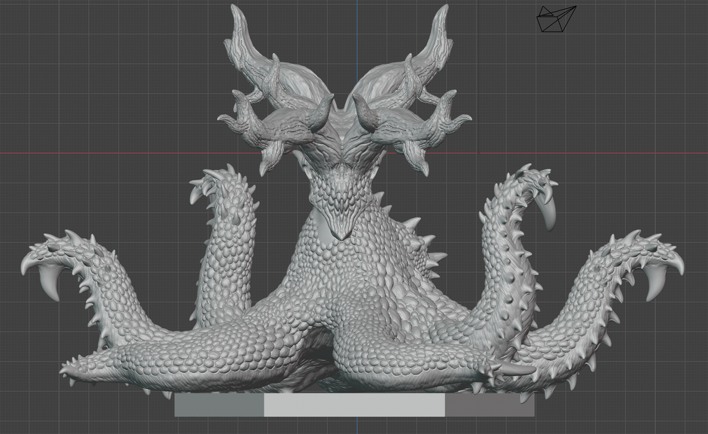
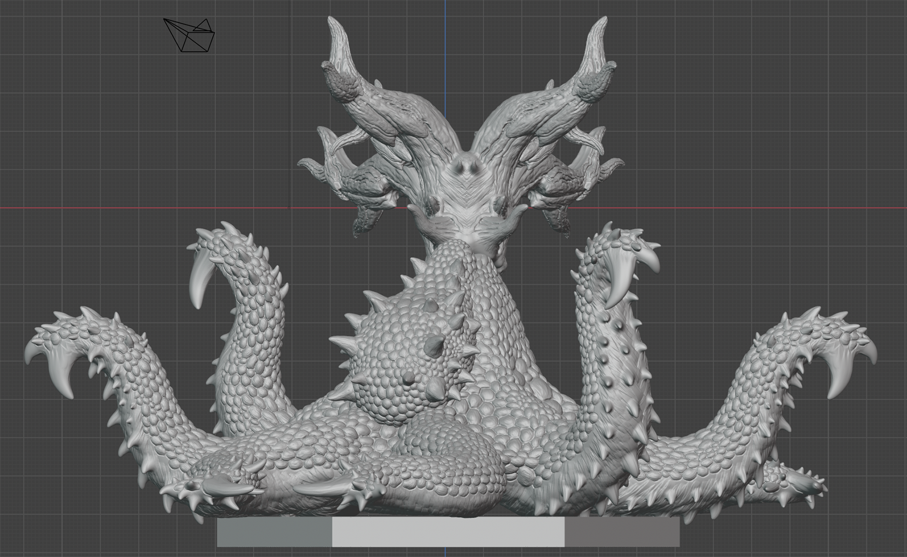

「 陸生頭足類のデザイン / Dsigan of Terrestrial Cephalopod 」
デザインコンセプト
本来、深海という強い水圧の中で進化を遂げた頭足類（蛸）。本作は、その特異な生命体を「陸生生物」として再定義するという、生物学的なイマジネーションから誕生しました。
水生生物を完全な陸上活動体として描く試みは、単なる形態の模写に留まりません。自然界においてさえ「エイリアン」と称されるほど異質な蛸のシルエットをベースに、重力に抗うための強靭な筋組織や、乾燥に耐えうる表皮といった「陸生特有の機能美」を融合させています。
デザインの核としたのは、見る者に与える「未知への違和感」と、そこに同居する「生物としての整合性」です。
粘膜を思わせる水生的な質感や触手の名残を随所に留めながらも、大地に根ざし、呼吸し、捕食するその佇まいは、異質でありながらどこか自然の理（ことわり）に馴染みます。
海と陸、二つの世界の境界を越境したその姿には、既存の生態系を揺るがすような、静かな実在感が宿っています。
「 陸生頭足類の造形 / Terrestrial Cephalopod Sculpture 」
造形：触腕表現の工夫
コメント更新中


ホームへ戻る